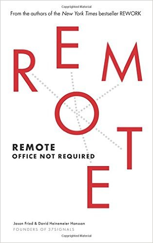

I recently read Remote: Office Not Required by David Heinemeier-Hansson (who created Ruby on Rails) and Jason Fried (who co-founded 37 Signals with Heinemeier-Hansson). This book is really a case study in why the future of work will be remote, of which the book did convince me (but I would say, I already believed).

The book is really structured to convince those who do not believe in the premise of the title. It talks about many successful companies who have transformed themselves to work remotely fully and large corporations who save lots of money on office space (IBM, being one example).
The biggest criticism I would have is that the book is simply too positive. It brushes over negatives, if it really ever discussed any (I came away not remembering any one overtly negative point). Also, the book never tackles what the future of remote working really will be, i.e. how it can be better. Some of the downsides of remote working (isolation being the major one) can be tackled with the help of technology, but the book never explores this point (in fairness it could be the topic of a book in and of itself). That would have made this a lot more interesting read!
Overall I would give this book to skeptics, but I would expect them to believe very little of it (or how it could apply to them, if your not IBM or a cool hip startup). A decidedly average book, considering a lot more could be discussed with the topic.
Rating 2.5/5